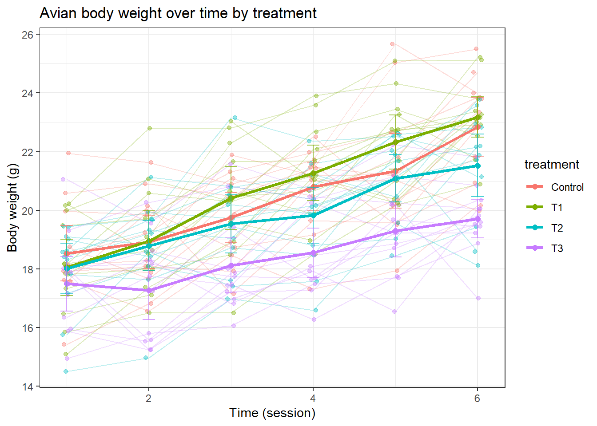
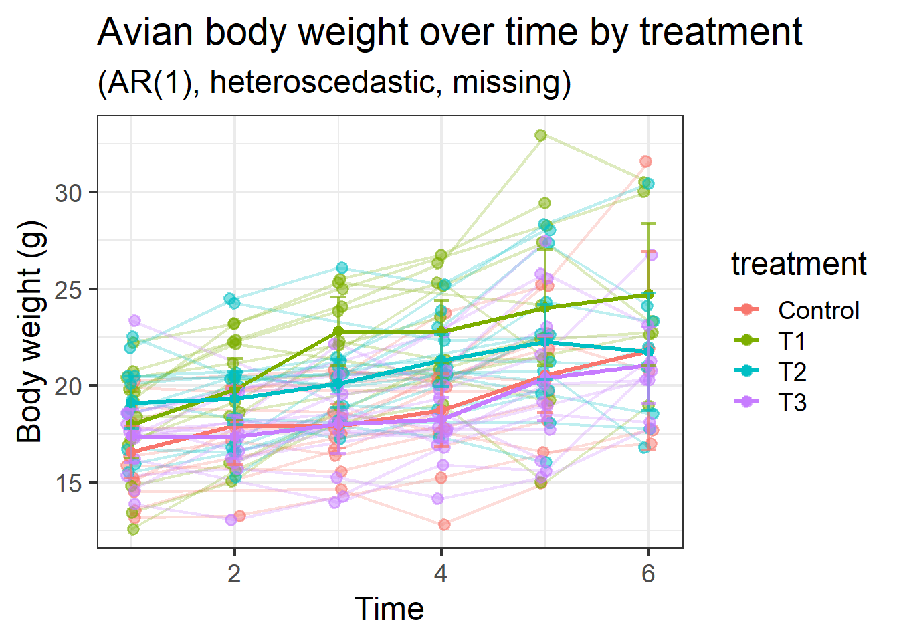
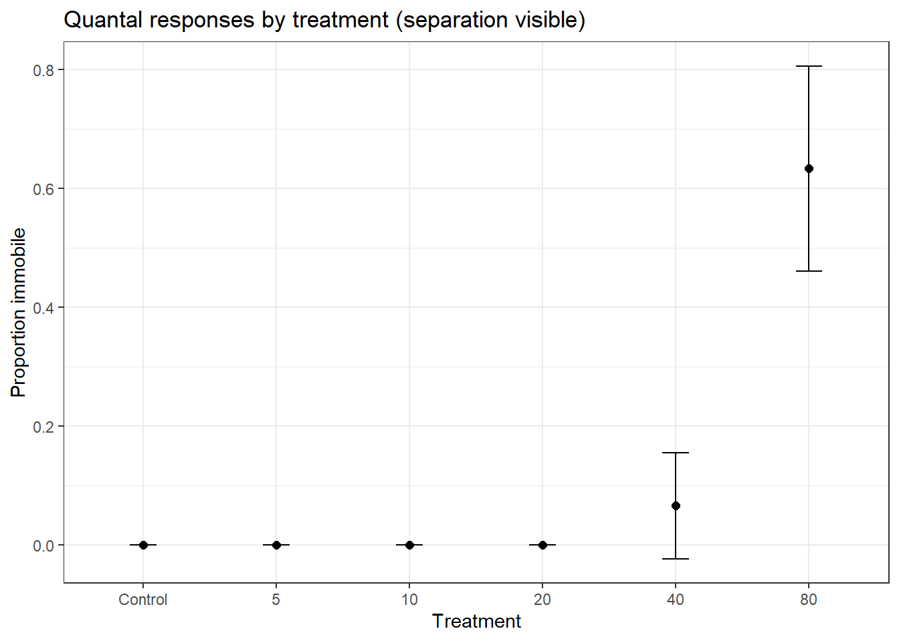

During the preparation, I ask Grok and Gemini to help me prepare some examples. Here is what I used as prompts for one of the example.
The simulation design:
…
In the visualization plot, I want to: - Overlay GLM lines (no random effects) versus GLMM field-specific prediction lines (with random intercepts included). - Test the Control vs Treated effect under GLM and under GLMM via likelihood-ratio tests. - Estimate statistical power for detecting the treatment effect via simulation for GLM vs GLMM.
I got some very good code snippets but the results are not exactly what I was looking for, I have to ajust here and there as usual. LLM still can improve for these kind of tasks. Especially like envrionment set up, small typos like loglik.p instead loglik. In these scenarios, I am telling LLM what I want in the end, and LLM should work like an efficient junior colleauge who can understand my requirements and can either code from scratch or find the right function in the right package to shorten the code. My experience is that LLM usually meet me in the middle. They often utilize popular packages, but not always find the most efficient solution. For example, for hierarchical data simulation, there are already some R packages can do this task by a single function. LLM tends to code this part by themselves. It is good because I think for people reading the code, it is actually easy to understand what is intended compared to reading help files of a function written by someone else.
Model Diagnostics
I would use “assumption checks and model diagnostics” or “model adequacy checks” rather than “validation.” The poster labels this step “Validation” and illustrates it with model validation plots, but in practice these are diagnostic checks of assumptions and fit.
What to check for GLMM (Negative Binomial with log link)
Residual uniformity and overall fit via simulated residuals.
Overdispersion.
Zero inflation.
Temporal autocorrelation (sessions are ordered).
Random-effect structure (e.g., normality of field intercepts).
Observed vs predicted patterns (by session and treatment).
GAMM and NLMM
Here’s a concise “Nonlinear models” block you can add, with conceptual expressions and ecotoxicology examples. Each formula is wrapped with$.
Concepts - NLMM (Nonlinear Mixed-Effects Model, Gaussian errors) - \(y_{ij} = f(x_{ij}; \boldsymbol{\theta}) + u_i + \epsilon_{ij}\) - \(u_i \sim \mathcal{N}(0, \sigma_u^2), \quad \epsilon_{ij} \sim \mathcal{N}(0, \sigma^2)\) - f(·) is nonlinear in parameters/predictors; random effects enter additively on the observation scale.
Choose NLMM/GNLMM when biology/mechanism implies nonlinear relationships (growth curves, dose-response, population dynamics), and you need to:
Respect non-Gaussian endpoints (counts, proportions) via appropriate links/distributions (GNLMM).
Capture hierarchical/repeated-measures designs via random effects (field/plot/animal).
RM-ANOVA vs. (G)LMM
When p‑values tend to be the same
Balanced design (equal numbers per group/subject/time) with no missing data.
Time modeled as a categorical factor.
Random intercept only (correlation structure equivalent to compound symmetry).
Homoscedastic residuals (equal variances across groups/times).
Consistent contrasts and the same hypothesis type (e.g., Type III tests in both).
Gaussian response with identity link (no transformation or non-Gaussian likelihood).
When they differ
Unbalanced or incomplete data (missing sessions/subjects). LMMs handle unbalance; RM‑ANOVA does not gracefully.
Sphericity violated. RM‑ANOVA needs GG/HF corrections (inflates p); LMM can model correlation directly (random slopes, AR(1), etc.), often yielding different p‑values.
Heterogeneous variances across groups/times. LMMs can model variance heterogeneity; RM‑ANOVA assumes equality.
More complex random effects (random slopes, crossed/random effects beyond subject intercepts). RM‑ANOVA can’t represent these; LMM can.
Non‑Gaussian endpoints (counts, proportions). GLMM vs RM‑ANOVA will diverge by design.
Different SS types or contrast coding (Type I vs II vs III, treatment vs sum contrasts) lead to different tests.
Small samples and df approximations (Satterthwaite/Kenward‑Roger in LMM) can shift p‑values relative to classical ANOVA dfs.
Using ML vs REML for comparing nested mixed models can change inference; RM‑ANOVA doesn’t have this distinction.
When they are the same
Below is a self-contained R example that: - Simulates a simple avian body weight dataset with repeated measures in a hierarchical design (birds nested in treatment, measured over time). - Compares a repeated-measures ANOVA with a linear mixed model (LMM) for treatment effects (also shows time and interaction). - Plots the data (spaghetti by bird + group means). - Produces a compact outcome table comparing p-values from RM-ANOVA vs LMM.
# PackagessuppressPackageStartupMessages({library(dplyr)library(tidyr)library(ggplot2)library(lme4)library(lmerTest) # p-values for lmer})
Warning: package 'ggplot2' was built under R version 4.5.2
set.seed(123)# 1) Simulate hierarchical repeated-measures datasimulate_body_weight <-function(n_groups =4, # Control + 3 treatmentsgroup_names =c("Control","T1","T2","T3"),n_birds_per_group =12,n_time =6, # repeated measuresbeta0 =20, # baseline weight (g)treat_effects =c(0, 1.0, -0.5, -1.5), # group effects (Control=0)time_slope =0.8, # growth per time (g)treat_time_slopes =c(0, 0.2, -0.1, -0.3), # treatment-specific deviations in slopesd_id =1.5, # random intercept SD (bird-level)sd_resid =1.0# residual SD) {stopifnot(n_groups ==length(group_names), length(treat_effects) == n_groups) ids <-unlist(lapply(seq_len(n_groups), function(g) {paste0(group_names[g], "_", seq_len(n_birds_per_group)) })) df <-expand.grid(id = ids,time =seq_len(n_time),KEEP.OUT.ATTRS =FALSE,stringsAsFactors =FALSE )# Map id -> treatment id_map <-data.frame(id = ids,treatment =rep(group_names, each = n_birds_per_group),stringsAsFactors =FALSE ) df <- df %>%left_join(id_map, by ="id") df$treatment <-factor(df$treatment, levels = group_names)# Center time for stability; keep both factor and centered numeric df <- df %>%mutate(time_f =factor(time),time_c = time -mean(time) )# Random intercept per bird re_id <-rnorm(length(unique(df$id)), 0, sd_id)names(re_id) <-unique(df$id)# Fixed effects by treatment and time (allow treatment-specific slopes) treat_idx <-match(df$treatment, group_names) tr_eff <- treat_effects[treat_idx] tr_slope <- time_slope + treat_time_slopes[treat_idx] mu <- beta0 + tr_eff + tr_slope * df$time_c + re_id[df$id] y <-rnorm(nrow(df), mean = mu, sd = sd_resid) df$weight <- y df}dat <-simulate_body_weight()# 2) Repeated-measures ANOVA (between: treatment; within: time)# Classic RM-ANOVA requires within-subject (id) Error termaov_rm <-aov(weight ~ treatment * time_f +Error(id/time_f), data = dat)sum_aov <-summary(aov_rm)# 3) Linear Mixed Model (random intercept for id)# Keep time as factor to align with RM-ANOVA fixed-effects structureoptions(contrasts =c("contr.sum", "contr.poly")) # for type IIIm_lmm <-lmer(weight ~ treatment * time_f + (1| id), data = dat)anova_lmm <-anova(m_lmm, type =3) # Satterthwaite df from lmerTest# 4) Extract comparable results (Treatment, Time, Treatment:Time)# RM-ANOVA tables are in different Error strata:# - Treatment (between) in "Error: id"# - Time and Treatment:Time in "Error: id:time_f"get_aov_p <-function(sum_list, stratum, term) {# Navigate summary(aov) object tab <- sum_list[[stratum]][[1]]# Handle row names carefully (factor contrasts appear) rn <-rownames(tab) hit <-which(startsWith(rn, term))if (length(hit) ==0) return(NA_real_)as.numeric(tab[hit[1], "Pr(>F)"])}p_aov_treat <-get_aov_p(sum_aov, "Error: id", "treatment")p_aov_time <-get_aov_p(sum_aov, "Error: id:time_f", "time_f")p_aov_int <-get_aov_p(sum_aov, "Error: id:time_f", "treatment:time_f")extract_lmm_row <-function(anova_tab, term_label) {# anova_lmm rownames should match "treatment", "time_f", "treatment:time_f" row <- anova_tab[term_label, , drop =FALSE]list(F =as.numeric(row$`F value`), df =as.numeric(row$DenDF), p =as.numeric(row$`Pr(>F)`))}row_treat <-extract_lmm_row(anova_lmm, "treatment")row_time <-extract_lmm_row(anova_lmm, "time_f")row_int <-extract_lmm_row(anova_lmm, "treatment:time_f")# 5) Outcome comparison tableoutcome <- tibble::tibble(Effect =c("Treatment", "Time", "Treatment × Time"),`RM-ANOVA p`=c(p_aov_treat, p_aov_time, p_aov_int),`LMM p`=c(row_treat$p, row_time$p, row_int$p))print(outcome)
# 6) Plot the data: spaghetti by bird + mean trend per treatment# Helper for 95% CI around the meanmean_ci <-function(y) { m <-mean(y) se <-sd(y) /sqrt(length(y))data.frame(y = m, ymin = m -1.96* se, ymax = m +1.96* se)}p <-ggplot(dat, aes(x = time, y = weight, color = treatment)) +# Thin lines per birdgeom_line(aes(group = id), alpha =0.25) +geom_point(alpha =0.4, position =position_jitter(width =0.05, height =0)) +# Overlaid mean and 95% CI per treatment across timestat_summary(fun = mean, geom ="line", linewidth =1.2) +stat_summary(fun = mean, geom ="point", size =2) +stat_summary(fun.data = mean_ci, geom ="errorbar", width =0.15, alpha =0.7) +theme_bw() +labs(title ="Avian body weight over time by treatment",x ="Time (session)", y ="Body weight (g)")print(p)

Notes
The simulation creates a hierarchical, repeated-measures dataset (birds nested in treatment, measured over time) with random bird intercepts and treatment-specific time slopes to allow a Treatment × Time interaction.
RM-ANOVA uses aov with Error(id/time), which assumes sphericity for within-subject effects; LMM relaxes this by modeling correlation via random effects.
The outcome table reports p-values for Treatment main effect, Time main effect, and Treatment × Time interaction, side-by-side for RM-ANOVA and LMM.
A case with differences
Below is a self-contained example that simulates a hierarchical repeated-measures dataset where RM-ANOVA and LMM/LME give different p-values, because: - Within-subject correlation is AR(1) (violates sphericity). - Residual variance changes over time (heteroscedasticity). - Some missing observations (unbalanced).
The RM-ANOVA cannot model these features; mixed models can.
R code:
# PackagessuppressPackageStartupMessages({library(dplyr)library(tidyr)library(ggplot2)library(lme4)library(lmerTest) # p-values for lmerlibrary(nlme) # correlation structures, heteroscedasticity})set.seed(42)# 1) Simulate hierarchical repeated-measures data with AR(1), heteroscedasticity, and missingnesssimulate_weight_complex <-function(group_names =c("Control","T1","T2","T3"),n_birds_per_group =c(15, 14, 16, 15), # slightly unbalanced sample sizesn_time =6,beta0 =20,treat_intercepts =c(0, 1.2, 0.0, -1.0), # treatment effects on intercepttime_slope =1.0,treat_slope_dev =c(0, 0.3, -0.2, -0.5), # treatment-specific slope deviationssd_id_intercept =2.0, # random intercept SD (bird)sd_id_slope =0.8, # random slope SD (time)cor_id =0.2, # intercept-slope correlationrho_ar1 =0.5, # AR(1) residual corr within birdsd_time_vec =c(1.0, 1.2, 1.5, 1.9, 2.4, 3.0), # heteroscedastic residual SD over timemiss_prop =0.2, # random missingness of individual obsmiss_last_time_prop =0.3# extra dropout at the last time) {stopifnot(length(group_names) ==length(n_birds_per_group))stopifnot(length(sd_time_vec) == n_time)# Build id list by group ids <-unlist(mapply(function(g, n) paste0(g, "_", seq_len(n)), group_names, n_birds_per_group)) id_df <-data.frame(id = ids,treatment =rep(group_names, times = n_birds_per_group),stringsAsFactors =FALSE ) id_df$treatment <-factor(id_df$treatment, levels = group_names)# Random effects per bird: (intercept, slope) with correlation Sigma_b <-matrix(c(sd_id_intercept^2, cor_id*sd_id_intercept*sd_id_slope, cor_id*sd_id_intercept*sd_id_slope, sd_id_slope^2), 2, 2) RE <- MASS::mvrnorm(n =nrow(id_df), mu =c(0, 0), Sigma = Sigma_b)colnames(RE) <-c("b0", "b1") id_df$b0 <- RE[, "b0"] id_df$b1 <- RE[, "b1"]# Expand to repeated measures df <- id_df %>% tidyr::uncount(n_time) %>%group_by(id) %>%mutate(time =row_number()) %>%ungroup() %>%mutate(time_c = time -mean(time),time_f =factor(time))# Fixed effects by treatment tr_idx <-match(df$treatment, group_names) tr_int <- treat_intercepts[tr_idx] tr_slp <- time_slope + treat_slope_dev[tr_idx]# Linear predictor with random intercept and random slope per bird (time as numeric) mu <- beta0 + tr_int + (tr_slp + df$b1) * df$time_c + df$b0# AR(1) residuals within each bird, then inflate SD by time-specific factor df <- df %>%arrange(id, time) df$eps <-NA_real_for (this_id inunique(df$id)) { idx <-which(df$id == this_id) Tn <-length(idx)# Generate AR(1) errors with base SD = 1, then scale per time e <-numeric(Tn) z <-rnorm(Tn, 0, 1) e[1] <- z[1]if (Tn >1) for (t in2:Tn) e[t] <- rho_ar1 * e[t-1] +sqrt(1- rho_ar1^2) * z[t]# Scale by heteroscedastic SD per time e <- e * sd_time_vec[df$time[idx]] df$eps[idx] <- e } df$weight <- mu + df$eps# Missingness: random missing + extra dropout at last time miss_rand <-runif(nrow(df)) < miss_prop miss_last <- (df$time == n_time) & (runif(nrow(df)) < miss_last_time_prop) df <- df[!(miss_rand | miss_last), ] df}dat <-simulate_weight_complex()# 2) RM-ANOVA (requires complete cases across time for each subject)dat_complete <- dat %>%group_by(id) %>%filter(n_distinct(time) ==max(time)) %>%ungroup()# Fit RM-ANOVA: between = treatment, within = time_faov_rm <-aov(weight ~ treatment * time_f +Error(id/time_f), data = dat_complete)
Warning in aov(weight ~ treatment * time_f + Error(id/time_f), data =
dat_complete): Error() model is singular
sum_aov <-summary(aov_rm)# Helper to extract RM-ANOVA p-valuesget_aov_p <-function(sum_list, stratum, term) { tab <- sum_list[[stratum]][[1]] rn <-rownames(tab) hit <-which(startsWith(rn, term))if (length(hit) ==0) return(NA_real_)as.numeric(tab[hit[1], "Pr(>F)"])}p_aov_treat <-get_aov_p(sum_aov, "Error: id", "treatment")p_aov_time <-get_aov_p(sum_aov, "Error: id:time_f", "time_f")p_aov_int <-get_aov_p(sum_aov, "Error: id:time_f", "treatment:time_f")# 3) Mixed models# 3a) LMM (lmer): random intercept + random slope for time (numeric)# Use the subjects available in dat (including those with missing times)options(contrasts =c("contr.sum", "contr.poly"))m_lmer <-lmer(weight ~ treatment * time_c + (1+ time_c | id), data = dat)anova_lmer <-anova(m_lmer, type =3) # Satterthwaite df# 3b) LME (nlme): random intercept+ slope, AR(1) within-id, heteroscedastic residual SD by timem_lme <-lme(fixed = weight ~ treatment * time_c,random =~ time_c | id,correlation =corAR1(value =0.5, form =~ time | id),weights =varIdent(value =c("2"=1.2,"3"=1.5,"4"=1.9,"5"=2.4,"6"=3.0),form =~1| time_f),data = dat,method ="REML",control =lmeControl(msMaxIter =200, msMaxEval =400, niterEM =50, tolerance =1e-6, returnObject =TRUE))
# 5) Plot: spaghetti and mean trends# Helper for 95% CI around the meanmean_ci <-function(y) { m <-mean(y); se <-sd(y) /sqrt(length(y))data.frame(y = m, ymin = m -1.96*se, ymax = m +1.96*se)}p <-ggplot(dat, aes(x = time, y = weight, color = treatment)) +geom_line(aes(group = id), alpha =0.25) +geom_point(alpha =0.5, position =position_jitter(width =0.05, height =0)) +stat_summary(fun = mean, geom ="line", linewidth =1.1) +stat_summary(fun = mean, geom ="point", size =2) +stat_summary(fun.data = mean_ci, geom ="errorbar", width =0.15, alpha =0.7) +theme_bw() +labs(title ="Avian body weight over time by treatment",subtitle="(AR(1), heteroscedastic, missing)",x ="Time", y ="Body weight (g)") +theme_bw(base_size=18)print(p)

What I usually see in practice - RM-ANOVA keeps only subjects with complete time series and assumes sphericity and homoscedasticity. With AR(1) correlation, heteroscedasticity, and missing data, p-values can be biased (often too liberal for within-subject effects). - LMM (lmer) handles random intercepts/slopes, and LME (nlme) can additionally model AR(1) and time-varying residual SD. In this setting, their p-values often differ from RM-ANOVA. - In this simulation, the biggest differences are usually for Time and Treatment × Time.
Cons of GLMM
I use the script below when I want to demonstrate a common pitfall: very few independent clusters, but many observations inside each cluster. It simulates a “small number of fields” case (n_fields = 4 with field-level treatment assignment), then compares treatment-effect p-values via: - Satterthwaite (lmerTest, REML, Type III) - Likelihood-ratio test (LRT; ML, nested model comparison) - Parametric bootstrap (PB; pbkrtest)
This setup often gives noticeably different p-values because the true replication for treatment is at the field level (2 vs 2), while the LRT can look too optimistic when there are many within-field observations.
Warning: package 'pbkrtest' was built under R version 4.5.2
set.seed(2025)# 1) Simulate: 4 fields (clusters), treatment assigned at field level (2 Control, 2 Treated)simulate_small_clusters <-function(n_fields =4,fields_per_trt =c(Control =2, Treated =2),n_sessions =10,n_reps_per_session =10, # within-field replicationbeta0 =20, # overall intercept (e.g., body weight)beta_treat =1.0, # treatment effect (Treated - Control) on response scalesd_field =2.0, # random field SD (between-field variability)sd_resid =0.3# residual SD (within-field variability)) {stopifnot(sum(fields_per_trt) == n_fields) field <-factor(paste0("F", seq_len(n_fields))) treatment_by_field <-c(rep("Control", fields_per_trt["Control"]),rep("Treated", fields_per_trt["Treated"])) treatment_by_field <-factor(treatment_by_field, levels =c("Control","Treated"))# Build design: sessions x reps within each field df <-do.call(rbind, lapply(seq_len(n_fields), function(i) {expand.grid(field = field[i],session =seq_len(n_sessions),rep =seq_len(n_reps_per_session),KEEP.OUT.ATTRS =FALSE, stringsAsFactors =FALSE ) })) %>%as.data.frame() df$treatment <- treatment_by_field[as.integer(factor(df$field, levels = field))] df$treatment <-factor(df$treatment, levels =c("Control","Treated"))# Random field effects b_field <-rnorm(n_fields, 0, sd_field); names(b_field) <- field# Linear predictor: y = beta0 + beta_treat * I(Treated) + b_field + e eta <- beta0 + (df$treatment =="Treated") * beta_treat + b_field[as.character(df$field)] y <-rnorm(nrow(df), mean = eta, sd = sd_resid) df$y <- y df}dat <-simulate_small_clusters()# 2) Plot: raw points by field, with group meansggplot(dat, aes(x = field, y = y, color = treatment)) +geom_jitter(width =0.1, alpha =0.3) +stat_summary(fun = mean, geom ="point", size =3, color ="black") +stat_summary(fun = mean, geom ="point", size =2) +theme_bw() +labs(title ="Simulated data: 4 fields",subtitle ="many within-field observations",y ="Response", x ="Field") +theme_bw(base_size=18)
# 3) Fit LMMs# Keep lmerTest and lme4 fits separate:# - lmerTest objects for Satterthwaite inference# - lme4 objects for LRT/PB to avoid class-conversion issues in pbkrtestm_full_REML_lt <- lmerTest::lmer(y ~ treatment + (1| field), data = dat, REML =TRUE)m_full_REML_l4 <- lme4::lmer(y ~ treatment + (1| field), data = dat, REML =TRUE)m_null_REML_l4 <- lme4::lmer(y ~1+ (1| field), data = dat, REML =TRUE)m_full_ML_l4 <- lme4::lmer(y ~ treatment + (1| field), data = dat, REML =FALSE)m_null_ML_l4 <- lme4::lmer(y ~1+ (1| field), data = dat, REML =FALSE)# 4) Satterthwaite p-value (fixed effect of treatment)# Use Type III with sum-to-zero contrasts for clarity (optional)options(contrasts =c("contr.sum","contr.poly"))anova_satt <-anova(m_full_REML_lt, type =3)p_satt <- anova_satt["treatment", "Pr(>F)"]df_satt <- anova_satt["treatment", "DenDF"]# 5) LRT p-value (ML fit; full vs null)lrt <-anova(m_null_ML_l4, m_full_ML_l4, test ="Chisq")p_lrt <- lrt$`Pr(>Chisq)`[2]chi <- lrt$Chisq[2]df_lrt <- lrt$Df[2]# 6) Parametric bootstrap p-value (pbkrtest)# This resamples under the null and compares the full-null statistic; increase nsim for stability.set.seed(2026)pb <-tryCatch(PBmodcomp(m_full_REML_l4, m_null_REML_l4, nsim =1000, seed =2026),error =function(e) e)if (inherits(pb, "error")) {warning(sprintf("PBmodcomp failed: %s", conditionMessage(pb))) p_pb <-NA_real_ pb_nsim <-1000} else {# PBmodcomp returns different tests; we take the "PBtest" line p_pb <- pb$test["PBtest", "p.value"] pb_nsim <-attr(pb, "nsim")if (is.null(pb_nsim)) pb_nsim <-1000}# 7) Collect resultsoutcome <-data.frame(Method =c("Satterthwaite (REML, Type III)", "LRT (ML, full vs null)", "Parametric bootstrap (PB)"),Statistic =c(paste0("DenDF≈", round(df_satt, 2)),paste0("ChiSq=", round(chi, 2), ", df=", df_lrt),paste0("nsim=", pb_nsim)),`p-value`=signif(c(p_satt, p_lrt, p_pb), 4),check.names =FALSE)print(outcome)
Method Statistic p-value
1 Satterthwaite (REML, Type III) DenDF≈2 0.088800
2 LRT (ML, full vs null) ChiSq=7.09, df=1 0.007733
3 Parametric bootstrap (PB) nsim=1000 0.090910
# 8) Optional: show field-level means (to emphasize true replication)field_means <- dat %>%group_by(field, treatment) %>%summarize(mean_y =mean(y), .groups ="drop")print(field_means)
# A tibble: 4 × 3
field treatment mean_y
<fct> <fct> <dbl>
1 F1 Control 21.2
2 F2 Control 20.1
3 F3 Treated 22.6
4 F4 Treated 23.5
Version note (R 4.5.1 tested): Keep lme4, lmerTest, and pbkrtest reasonably up to date and from a consistent library. In this example, Satterthwaite inference uses lmerTest fits, while parametric bootstrap (PBmodcomp) uses pure lme4 fits. This avoids class-conversion edge cases (for example, as_lmerModLmerTest failures) during bootstrap refits.
Why these methods disagree in this example
Treatment is assigned at the field level (2 control vs 2 treated), so the effective replication for the treatment effect is the number of fields, not the number of within-field measurements.
Satterthwaite (and Kenward–Roger) base the denominator df on cluster-level information; with 4 fields, DenDF is tiny (often around 2), yielding larger p-values.
The ML LRT can look much more optimistic because it leverages the large number of within-field observations in the likelihood. In small-cluster settings, that can understate uncertainty about a cluster-level treatment effect.
Parametric bootstrap (PB) tends to align more with small-sample cluster-level uncertainty, often closer to Satterthwaite/KR than to the LRT, especially with very few clusters.
If the methods look too similar in one run, I usually tweak the simulation to make the contrast clearer:
Increase within-field replication (n_sessions, n_reps_per_session) and reduce residual SD (sd_resid) to make LRT smaller.
Increase between-field SD (sd_field) so cluster differences dominate, keeping Satterthwaite/PB more conservative.
Keep only 4 fields with 2 per treatment to maintain minimal cluster replication.
Separation Problem
I like this dataset because it shows (quasi-)complete separation very clearly. In the 48 h data, Control, 5, 10, and 20 mg/L have zero immobility in every replicate, while 80 mg/L has high immobility and 40 mg/L has some. If I fit a logistic GLM with Treatment as a factor, separation shows up quickly: some treatment levels are all 0s, others are mostly 1s. Typical symptoms are “fitted probabilities 0 or 1 occurred,” huge SEs, and unstable p-values.
My usual workflow is: show the separation first, then refit with bias-reduced logistic regression.
R code
# Using your 'dat' object (48 h table with columns: Treatment, Dose, Immobile, Total)suppressPackageStartupMessages({library(dplyr)library(ggplot2)library(brglm2) # bias-reduced logistic + separation detectionlibrary(broom)})
Warning: package 'broom' was built under R version 4.5.2
data("quantal_dat_nested")
Warning in data("quantal_dat_nested"): data set 'quantal_dat_nested' not found
quantal_dat_nested <- drcHelper::quantal_dat_nested second_arcsin_data <- quantal_dat_nested$data[[2]] %>%mutate(arcsin_prop =asin(sqrt(immob)),Treatment =factor(Treatment, levels =c("Control", sort(as.numeric(unique(Treatment[Treatment !="Control"]))))))dat <- second_arcsin_data # 1) Show the pattern that causes separationby_trt <- dat %>%group_by(Treatment) %>%summarize(total_immob =sum(Immobile), total_n =sum(Total),prop_immob = total_immob / total_n, .groups ="drop")print(by_trt)
# Visual: proportion immobile by treatment (points with 95% binomial CI)ggplot(by_trt, aes(x =factor(Treatment,levels=c("Control","5",10,20,40,80)), y = prop_immob)) +geom_point(size =2) +geom_errorbar(aes(ymin = prop_immob -1.96*sqrt(prop_immob*(1-prop_immob)/total_n),ymax = prop_immob +1.96*sqrt(prop_immob*(1-prop_immob)/total_n)),width =0.2) +theme_bw() +labs(x ="Treatment", y ="Proportion immobile", title ="Quantal responses by treatment (separation visible)")

# 2) Fit logistic GLM with Treatment as factor (expect separation warnings)m_glm_trt <-glm(cbind(Immobile, Total - Immobile) ~ Treatment,data = dat, family = binomial)summary(m_glm_trt)
Call:
glm(formula = cbind(Immobile, Total - Immobile) ~ Treatment,
family = binomial, data = dat)
Coefficients:
Estimate Std. Error z value Pr(>|z|)
(Intercept) -15.373 2890.079 -0.005 0.996
Treatment1 -7.163 7646.429 -0.001 0.999
Treatment2 -7.163 7646.429 -0.001 0.999
Treatment3 -7.163 7646.429 -0.001 0.999
Treatment4 -7.163 7646.429 -0.001 0.999
Treatment5 12.734 2890.079 0.004 0.996
(Dispersion parameter for binomial family taken to be 1)
Null deviance: 87.750 on 35 degrees of freedom
Residual deviance: 12.193 on 30 degrees of freedom
AIC: 38.048
Number of Fisher Scoring iterations: 20
# You’ll likely see "fitted probabilities numerically 0 or 1 occurred" and very large SEs.# 3) Detect separation formallylibrary(detectseparation)
Registered S3 methods overwritten by 'registry':
method from
print.registry_field proxy
print.registry_entry proxy
Attaching package: 'detectseparation'
The following objects are masked from 'package:brglm2':
check_infinite_estimates, detect_separation
sep <-glm(cbind(Immobile, Total - Immobile) ~ Treatment,data = dat, family =binomial("logit"), method ="detect_separation")print(sep)
Implementation: ROI | Solver: lpsolve
Separation: TRUE
Existence of maximum likelihood estimates
(Intercept) Treatment1 Treatment2 Treatment3 Treatment4 Treatment5
-Inf Inf -Inf -Inf -Inf Inf
0: finite value, Inf: infinity, -Inf: -infinity
# The report indicates which coefficients diverge (complete or quasi-complete separation).# 4) Bias-reduced (penalized) logistic to obtain finite, stable estimatesm_br_trt <-glm(cbind(Immobile, Total - Immobile) ~ Treatment,data = dat, family =binomial("logit"),method ="brglmFit",type ="AS_median")
Warning: brglmFit: algorithm did not converge. Try changing the optimization
algorithm defaults, e.g. the defaults for one or more of `maxit`, `epsilon`,
`slowit`, and `response_adjustment`; see `?brglm_control` for default values
and available options
Warning: brglmFit: fitted probabilities numerically 0 or 1 occurred
summary(m_br_trt)
Call:
glm(formula = cbind(Immobile, Total - Immobile) ~ Treatment,
family = binomial("logit"), data = dat, method = "brglmFit",
type = "AS_median")
Deviance Residuals:
Min 1Q Median 3Q Max
-14.4752 -0.4162 0.0000 0.0000 1.0146
Coefficients:
Estimate Std. Error z value Pr(>|z|)
(Intercept) -4.004e+13 4.084e+06 -9804980 <2e-16 ***
Treatment1 -2.465e+14 1.081e+07 -22811620 <2e-16 ***
Treatment2 -2.465e+14 1.081e+07 -22811618 <2e-16 ***
Treatment3 -2.465e+14 1.081e+07 -22811616 <2e-16 ***
Treatment4 4.004e+13 4.084e+06 9804980 <2e-16 ***
Treatment5 4.004e+13 4.084e+06 9804980 <2e-16 ***
---
Signif. codes: 0 '***' 0.001 '**' 0.01 '*' 0.05 '.' 0.1 ' ' 1
(Dispersion parameter for binomial family taken to be 1)
Null deviance: 87.751 on 35 degrees of freedom
Residual deviance: 766.214 on 30 degrees of freedom
AIC: 792.07
Type of estimator: AS_median (median bias-reducing adjusted score equations)
Number of Fisher Scoring iterations: 100
# 5) Trend test alternative (numeric dose) can still struggle if there’s no overlap.# Use log10 dose; add a tiny constant to allow log(0) if needed.dat <- dat %>%mutate(logdose =log10(pmax(Dose, 1e-6)))m_glm_trend <-glm(cbind(Immobile, Total - Immobile) ~ logdose,data = dat, family = binomial)
Warning: glm.fit: fitted probabilities numerically 0 or 1 occurred
summary(m_glm_trend)
Call:
glm(formula = cbind(Immobile, Total - Immobile) ~ logdose, family = binomial,
data = dat)
Coefficients:
Estimate Std. Error z value Pr(>|z|)
(Intercept) -20.201 4.774 -4.231 2.32e-05 ***
logdose 10.908 2.591 4.210 2.55e-05 ***
---
Signif. codes: 0 '***' 0.001 '**' 0.01 '*' 0.05 '.' 0.1 ' ' 1
(Dispersion parameter for binomial family taken to be 1)
Null deviance: 87.75 on 35 degrees of freedom
Residual deviance: 12.36 on 34 degrees of freedom
AIC: 30.215
Number of Fisher Scoring iterations: 10
# Bias-reduced trend fitm_br_trend <-glm(cbind(Immobile, Total - Immobile) ~ logdose,data = dat, family =binomial("logit"),method ="brglmFit", type ="AS_median")
Warning: brglmFit: fitted probabilities numerically 0 or 1 occurred
summary(m_br_trend)
Call:
glm(formula = cbind(Immobile, Total - Immobile) ~ logdose, family = binomial("logit"),
data = dat, method = "brglmFit", type = "AS_median")
Deviance Residuals:
Min 1Q Median 3Q Max
-0.99720 -0.17288 -0.03578 0.00000 2.18369
Coefficients:
Estimate Std. Error z value Pr(>|z|)
(Intercept) -19.434 4.592 -4.232 2.31e-05 ***
logdose 10.471 2.495 4.196 2.71e-05 ***
---
Signif. codes: 0 '***' 0.001 '**' 0.01 '*' 0.05 '.' 0.1 ' ' 1
(Dispersion parameter for binomial family taken to be 1)
Null deviance: 87.751 on 35 degrees of freedom
Residual deviance: 12.401 on 34 degrees of freedom
AIC: 30.256
Type of estimator: AS_median (median bias-reducing adjusted score equations)
Number of Fisher Scoring iterations: 6
# 6) Plot fitted curves (classical GLM vs bias-reduced) over raw proportions# Aggregate proportions per dose for plottingagg <- dat %>%group_by(Dose) %>%summarize(prop =sum(Immobile)/sum(Total), n =sum(Total), .groups ="drop")newd <-data.frame(Dose =sort(unique(dat$Dose)))newd$logdose <-log10(pmax(newd$Dose, 1e-6))newd$pred_glm <-plogis(predict(m_glm_trend, newdata = newd, type ="link"))newd$pred_br <-plogis(predict(m_br_trend, newdata = newd, type ="link"))ggplot(agg, aes(Dose, prop)) +geom_point(size =2) +geom_line(data = newd, aes(Dose, pred_glm, color ="GLM (MLE)")) +geom_line(data = newd, aes(Dose, pred_br, color ="Bias-reduced (brglm2)"), linetype ="dashed") +scale_color_manual(values =c("GLM (MLE)"="#1f77b4", "Bias-reduced (brglm2)"="#d62728")) +theme_bw() +labs(y ="Proportion immobile", color ="Fit",title ="Dose–response logistic fits: MLE vs bias-reduced")
Several treatments have 0 immobility in every replicate, while high dose has consistent immobility; the design perfectly (or quasi-perfectly) separates outcomes by treatment/dose.
Symptoms in GLM
Warnings about fitted probabilities 0 or 1, huge standard errors, unstable or infinite estimates, and misleading p-values.
Remedies
Bias-reduced/Firth logistic (brglm2::brglm, logistf) produces finite, stable estimates and CIs.
Consider modeling dose as a numeric covariate (log-dose), but if overlap is absent, bias-reduction is still recommended.
For extra-binomial variation, a beta-binomial or a binomial GLMM with an observation-level random effect can address overdispersion—but note: GLMMs do not “fix” separation by themselves; separation can persist in mixed models.
GLMM note - If you try a binomial GLMM like glmer(cbind(Immobile, Total - Immobile) ~ logdose + (1|Replicate), family=binomial, data=dat), you may still get convergence warnings or boundary estimates when separation is near-perfect. Penalized methods (e.g., brglm2) are designed for this issue.
Links
Here are concise, reliable links you can add to a references slide for GLMM/GAMM work in ecotoxicology:
Core papers and books - Bates, Mächler, Bolker, Walker (2015). Fitting linear mixed-effects models using lme4 (JSS): https://www.jstatsoft.org/article/view/v067i01 - Zuur et al. (2009). Mixed Effects Models and Extensions in Ecology with R (Springer): https://link.springer.com/book/10.1007/978-0-387-87458-6 - Bolker (2008). Ecological Models and Data in R (Princeton): https://press.princeton.edu/books/paperback/9780691125229/ecological-models-and-data-in-r - Harrison et al. (2018). A brief introduction to mixed effects modelling in ecology (MEE): https://doi.org/10.1111/2041-210X.12570 - Wood (2017). Generalized Additive Models: An Introduction with R (CRC): https://www.routledge.com/Generalized-Additive-Models/WOOD/p/book/9781498728331